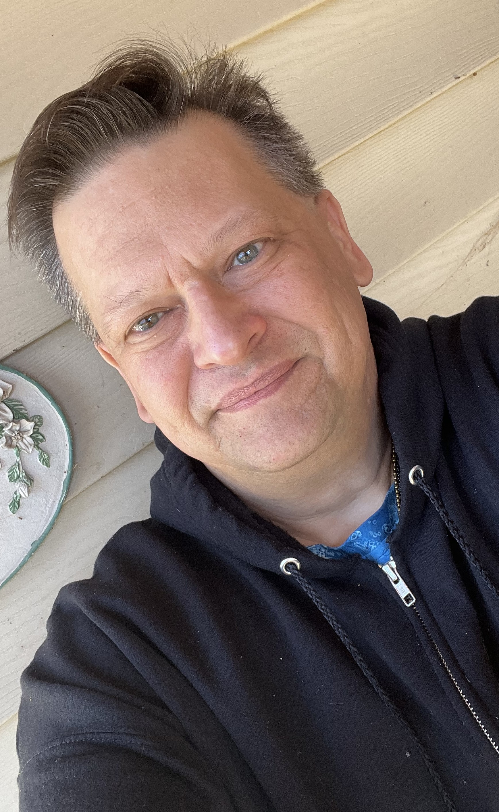

I am currently employed as a Cloud Services Specialist for a global physical security company. I am a fully qualified remote security support specialist certified across several access control, network video surveillance and intrusion prevention systems. I have a Master of Science in Information Technology from the University of Cincinnati and a Bachelor of Science in Chemistry from Governors State University. I have extensive art and design studio education from the Herron School of Art at Indiana University, The Art Academy University of San Francisco, and the Art Institute of Pittsburgh. I am currently pursuing a Front End Developer Certification from Meta and Graphic Arts Certificate from Adobe. I plan to also complete some formal training in Cinema 4D and Unreal Game Engine for Film and Cinema
I have keen interest for cloud applications / web designs and the CG creations.
I also have personal curiosity for the Internet of Things integration into web applications
I have a solid background in MicrosSoft Code, Adobe Illustrator, Photoshop, After Effects as well as a working knowledge of Unreal Engine. I possess intermediate skill levels in Java Script, Python, and C++. I purse freelance work in motion graphics and web design. I continue to study Classical Drawing. My favorite media, however, are pastels and I do some sculpture in Limestone and Alabaster as well.
From the IT perscpetive, it is my goal to complete an AWS Cloud Practioner Certification in mid 2025.I am 53 years old and was raised near Chicago Illinois and reside in Indianapolis, Indiana. I have one adult autistic son. I am Roman Catholic and support both NAMI and Autism Speaks Charities.
